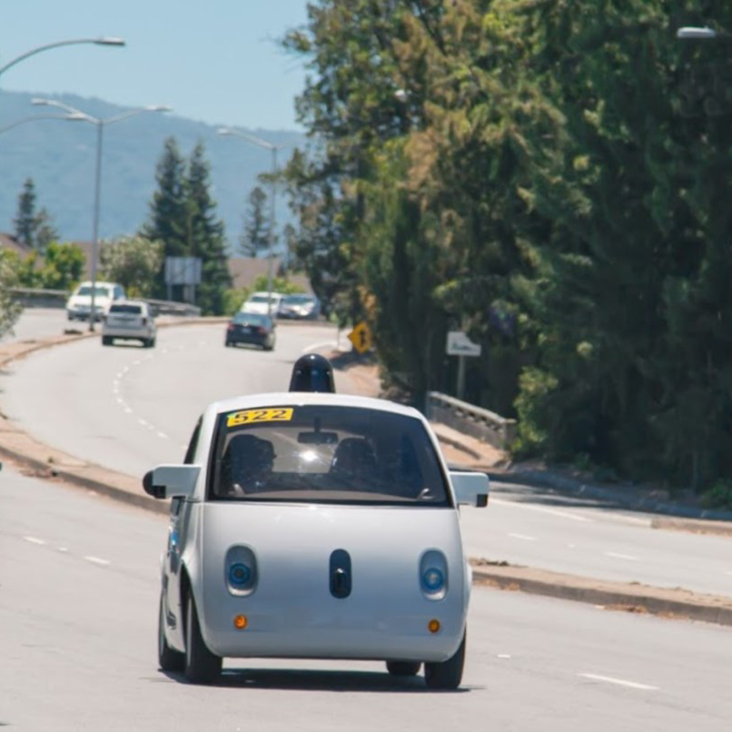
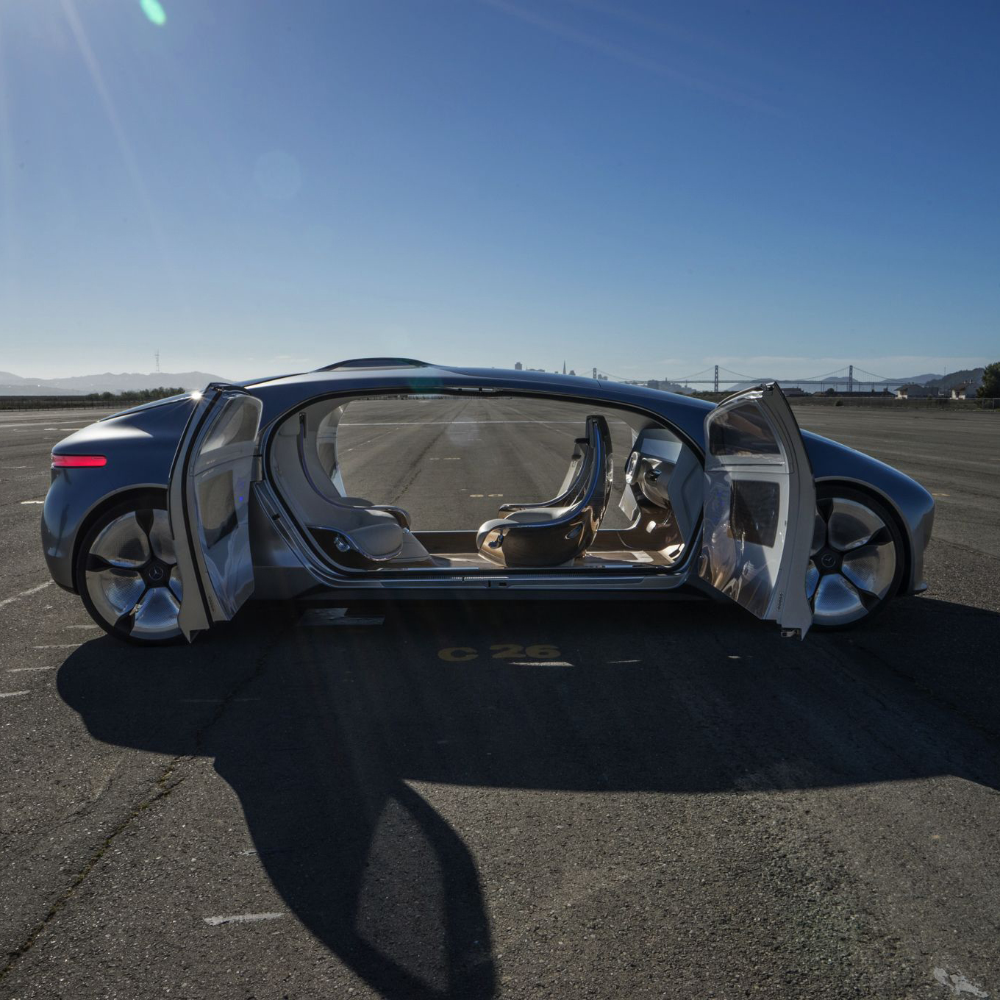
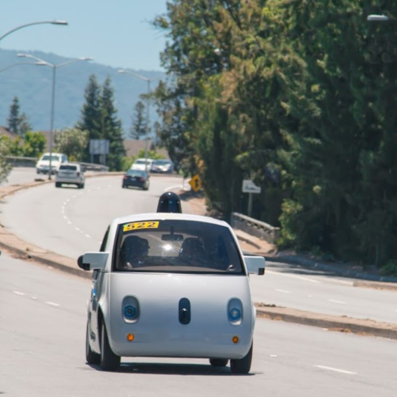
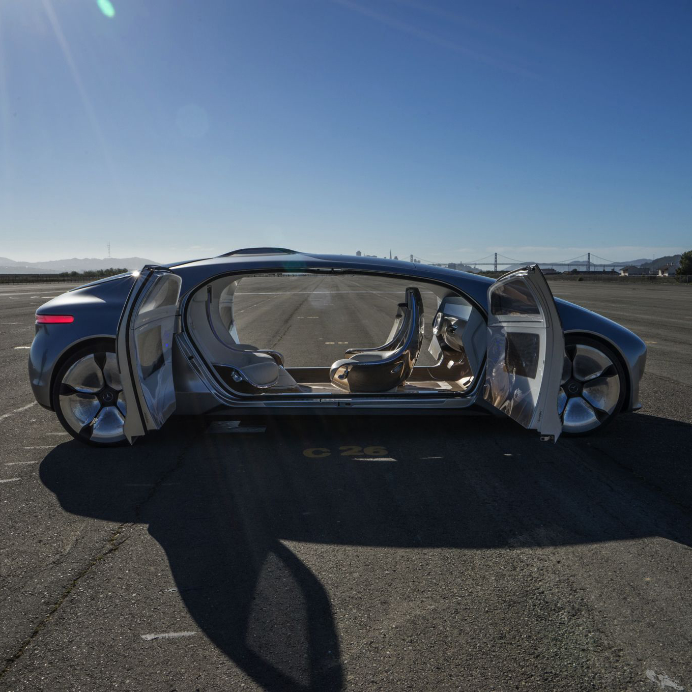

Autonomous Car Research
Challenge
Montaag was approached by a car interior parts manufacturer to find out how they could position themselves to be prepared when autonomous cars hit the market and are widely available.
Project Overview
The client is a international tier 2 car parts manufacturer that generates over a billion dollars in revenue each year selling interior parts to major car manufacturers. They wanted to embark on a project to develop seats and other interior parts that were specifically designed for the user of autonomous cars.
People have wanted self-driving cars for a long time, and we're getting very close to that idea being a reality.
 



Research Strategy
I was brought in to develop a plan for researching what users expectations were for self-driving cars and how subject matter experts were planning for a future with self-driving cars. The client wanted us to examine the following ‘megatrends’:
- Autonomous Vehicles
- Electrification
- Flexible Mobility
- Connectivity
For this interrogation, I decided that an ethnographic research strategy would allow for both depth and breadth of the subject. This strategy would include literature review, (potential) user depth interviews, Subject Matter Expert depth interviews, semantic analysis, secondary research, and emic/etic analysis. The design team and I interviewed informants across multiple industries and generations in order to compile a set of data that provides the broadest considerations. We conducted in-depth interviews with young people, old people, design students, computer science students, architects, city planners, tech workers, researchers, designers, and automotive industry experts. We also conducted observational studies of mobility services and interviewed drivers to understand their thoughts, needs and experiences. Our fieldwork was recorded and coded to allow for analysis of our findings.
Results
The final 130 page report consisted of 16 insights divided across three viewpoints: Market Change, Utilization Change, and Societal Change. Each insight included supporting primary and secondary research. This formative study was used as a catalyst for design workshops with the client at Montaag’s studio in Berkeley. These design workshop lead to the client moving forward with the design phase of the project.